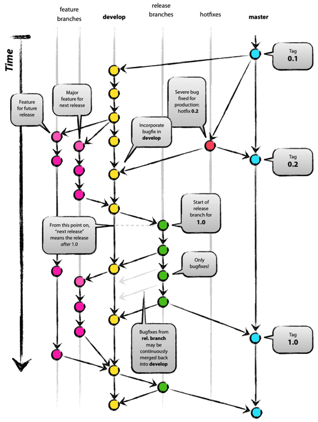
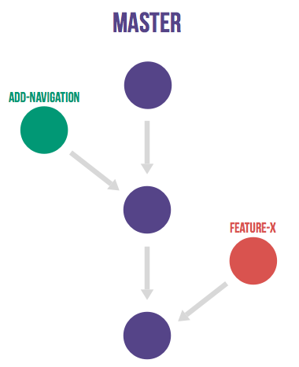
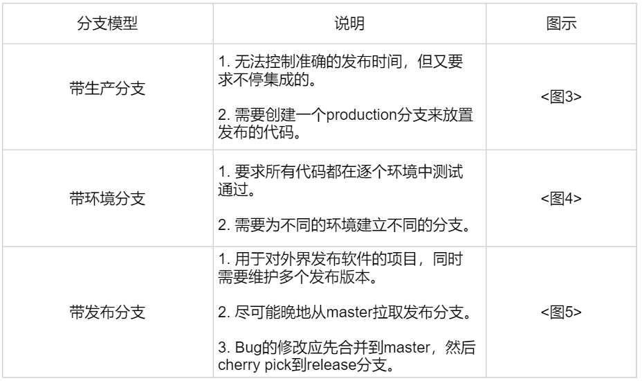
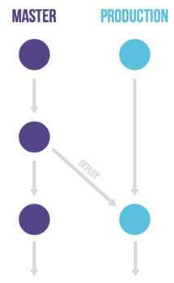
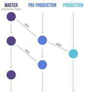
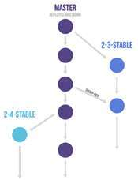
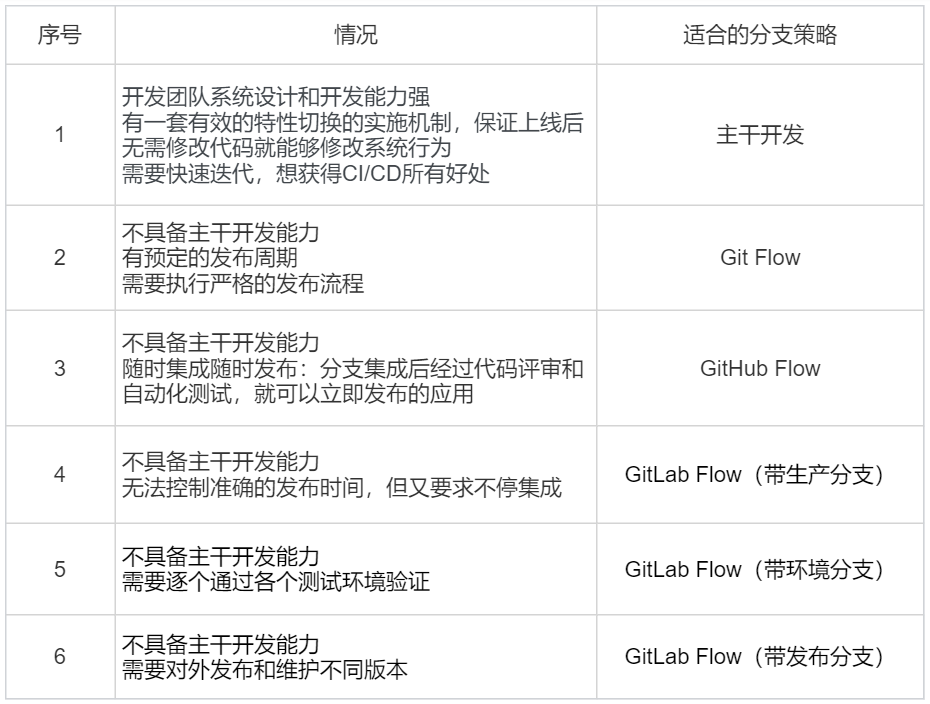

- 00 开篇词 量身定制你的持续交付体系.md
- 01 持续交付到底有什么价值？.md
- 02 影响持续交付的因素有哪些？.md
- 03 持续交付和DevOps是一对好基友.md
- 04 一切的源头，代码分支策略的选择.md
- 05 手把手教你依赖管理.md
- 06 代码回滚，你真的理解吗？.md
- 07 “两个披萨”团队的代码管理实际案例.md
- 08 测试环境要多少？从现实需求说起.md
- 09 测试环境要多少？从成本与效率说起.md
- 10 让环境自己说话，论环境自描述的重要性.md
- 11 “配置”是把双刃剑，带你了解各种配置方法.md
- 12 极限挑战，如何做到分钟级搭建环境？.md
- 13 容器技术真的是环境管理的救星吗？.md
- 14 如何做到构建的提速，再提速！.md
- 15 构建检测，无规矩不成方圆.md
- 16 构建资源的弹性伸缩.md
- 17 容器镜像构建的那些事儿.md
- 18 如何做好容器镜像的个性化及合规检查？.md
- 19 发布是持续交付的最后一公里.md
- 20 Immutable！任何变更都需要发布.md
- 21 发布系统一定要注意用户体验.md
- 22 发布系统的核心架构和功能设计.md
- 23 业务及系统架构对发布的影响.md
- 24 如何利用监控保障发布质量？.md
- 25 代码静态检查实践.md
- 26 越来越重要的破坏性测试.md
- 27 利用Mock与回放技术助力自动化回归.md
- 28 持续交付为什么要平台化设计？.md
- 29 计算资源也是交付的内容.md
- 30 持续交付中有哪些宝贵数据？.md
- 31 了解移动App的持续交付生命周期.md
- 32 细谈移动APP的交付流水线（pipeline）.md
- 33 进阶，如何进一步提升移动APP的交付效率？.md
- 34 快速构建持续交付系统（一）：需求分析.md
- 35 快速构建持续交付系统（二）：GitLab 解决代码管理问题.md
- 36 快速构建持续交付系统（三）：Jenkins 解决集成打包问题.md
- 37 快速构建持续交付系统（四）：Ansible 解决自动部署问题.md
- 持续交付专栏特别放送 答疑解惑.md
- 持续交付专栏特别放送 高效学习指南.md
- 结束语 越痛苦的事，越要经常做.md
04 一切的源头，代码分支策略的选择
记得大概是一年前吧，我与好友老吴喝茶聊天时，讨论到：高效的持续交付体系，必定需要一个合适的代码分支策略。
我告诉老吴：“采用不同的代码分支策略，意味着实施不同的代码集成与上线流程，这会影响整个研发团队每日的协作方式，因此研发团队通常会很认真地选择自己的策略。”
老吴是一名有多年开发经验的资深架构师，当时正好要接手一个框架团队，从个人贡献者向团队管理者转型。他个人对代码管理工具可谓熟之又熟，甚至连“老古董”的CVS都可以跟你聊半天。但他在为团队制定代码分支管理策略时，还是慎之又慎，足见其重要性。
最后我们发现，要确定选用哪种代码分支管理策略，需要先假设几个问题，这几个问题有了答案，也就代表你找到了适合的方向。
你需要思考的几个问题如下：
Google和Facebook这两个互联网大咖都在用主干开发（Trunk Based Development，简称TBD），我们是不是也参照它俩，采用主干开发分支策略？
用Google搜索一下，会发现有个排名很靠前的分支策略，叫“A successful Git branching model”（简称 Git Flow），它真的好用吗？团队可以直接套用吗？
GitHub 和 GitLab 这两个当下最流行的代码管理平台，各自推出了 GitHub Flow 和 GitLab Flow，它们有什么区别？适合我使用吗？
像阿里、携程和美团点评这样国内知名的互联网公司，都在用什么样的分支策略？
今天，我想再沿着当时的思考路径，和你一起回顾和总结一下，希望能够带你全面了解代码分支策略，帮助你做出合适的选择。
谈谈主干开发（TBD）
主干开发是一个源代码控制的分支模型，开发者在一个称为 “trunk” 的分支（Git 称 master） 中对代码进行协作，除了发布分支外没有其他开发分支。
Google和 Facebook都是采用“主干开发”的方式，代码一般直接提交到主干的头部，这样可以保证所有用户看到的都是同一份代码的最新版本。
“主干开发”确实避免了合并分支时的麻烦，因此像Google这样的公司一般就不采用分支开发，分支只用来发布。
大多数时候，发布分支是主干某个时点的快照。以后的改Bug和功能增强，都是提交到主干，必要时 cherry-pick （选择部分变更集合并到其他分支）到发布分支。与主干长期并行的特性分支极为少见。
由于不采用“特性分支开发”，所有提交的代码都被集成到了主干，为了保证主干上线后的有效性，一般会使用特性切换（feature toggle）。特性切换就像一个开关可以在运行期间隐藏、启用或禁用特定功能，项目团队可以借助这种方式加速开发过程。
特性切换在大型项目持续交付中变得越来越重要，因为它有助于将部署从发布中解耦出来。但据吉姆 · 伯德（Jim Bird）介绍，特性切换会导致代码更脆弱、更难测试、更难理解和维护、更难提供技术支持，而且更不安全。
他的主要论据是，将未经测试的代码引入生产环境是一个糟糕的主意，它们引发的问题可能会在无意间暴露出来。另外，越来越多的特性切换会使得逻辑越来越混乱。
特性切换需要健壮的工程过程、可靠的技术设计和成熟的特性切换生命周期管理，如果不具备这三个关键的条件，使用特性切换反而会降低生产力。
根据上面的分析，主干开发的分支策略虽然有利于开展持续交付，但是它对开发团队的能力要求也更高。
主干开发的优缺点如表1所示。-
表1 主干开发的优缺点
谈谈特性分支开发
和主干开发相对的是 “特性分支开发” 。在这个大类里面，我会给你分析Git Flow、GitHub Flow和 GitLab Flow这三个常用的模型。
第一，Git Flow
我们在Google上查关键词“branch model”（也就是“分支模型”），有一篇排名比较靠前的文章“A successful Git branching model”，它介绍了Git Flow模型。
Git刚出来的那些年，可参考的模型不多，所以Git Flow模型在2011年左右被大家当作了推荐的分支模型，至今也还有项目团队在使用。然而，Git Flow烦琐的流程也被许多研发团队吐槽，大家普遍认为hotfix和 release 分支显得多余，平时都不会去用。

图1 Git Flow示意图
第二，GitHub Flow
GitHub Flow 是 GitHub 所使用的一种简单流程。该流程只使用master和特性分支，并借助 GitHub 的 pull request 功能。

图2 GitHub Flow示意图
在 GitHub Flow 中，master 分支中包含稳定的代码，它已经或即将被部署到生产环境。任何开发人员都不允许把未测试或未审查的代码直接提交到 master 分支。对代码的任何修改，包括Bug 修复、热修复、新功能开发等都在单独的分支中进行。不管是一行代码的小改动，还是需要几个星期开发的新功能，都采用同样的方式来管理。
当需要修改时，从 master 分支创建一个新的分支，所有相关的代码修改都在新分支中进行。开发人员可以自由地提交代码和提交到远程仓库。
当新分支中的代码全部完成之后，通过 GitHub 提交一个新的 pull request。团队中的其他人员会对代码进行审查，提出相关的修改意见。由持续集成服务器（如 Jenkins）对新分支进行自动化测试。当代码通过自动化测试和代码审查之后，该分支的代码被合并到 master 分支。再从 master 分支部署到生产环境。
GitHub Flow 的好处在于非常简单实用，开发人员需要注意的事项非常少，很容易形成习惯。当需要修改时，只要从 master 分支创建新分支，完成之后通过 pull request 和相关的代码审查，合并回 master 分支就可以了。
第三，GitLab Flow
上面提到的GitHub Flow，适用于特性分支合入master后就能马上部署到线上的这类项目，但并不是所有团队都使用GitHub或使用pull request功能，而是使用开源平台GitLab，特别是对于公司级别而言，代码作为资产，不会随意维护在较公开的GitHub上（除非采用企业版）。
GitLab Flow 针对不同的发布场景，在GitHub Flow（特性分支加master分支）的基础上做了改良，额外衍生出了三个子类模型，如表2所示。-

表2 GitLab Flow 的三个分支

图3 带生产分支的GitLab Flow

图4 带环境分支的GitLab Flow

图5 带发布分支的GitLab Flow
GitLab Flow的特性分支合入master用的是“Merge Request”，功能与GitHub Flow的“pull request”相同，这里不再赘述。
通过Git Flow、GitHub Flow和 GitLab Flow（3个衍生类别） 这几个具体模型的介绍，我给你总结一下特性分支开发的优缺点。如表3所示。
表3特性分支开发的优缺点
选出最适合的分支策略
上面我跟你讲到的分支模型，都是IT研发领域比较流行的。虽然有些策略带上了代码平台的标识，如GitHub Flow，但并不意味着该策略仅限于GitHub代码平台使用，你完全可以在自己搭建的代码平台上使用这些策略。
接下来，我就总体归纳一下什么情况下应该选择什么样的分支策略。如表4所示。-

表4 不同情况适用的代码分支策略
国内互联网公司的选择
GitLab作为最优秀的开源代码平台，被多数互联网大公司（包括阿里、携程和美团点评等）所使用，这些大厂也都采用特性分支开发策略。当然，这些大公司在长期持续交付实践中，会结合各自公司的情况做个性化的定制。
比如，携程公司在GitHub Flow的基础上，通过自行研发的集成加速器（Light Merge）和持续交付Paas平台，一起完成集成和发布。
再比如，阿里的AoneFlow，采用的是主干分支、特性分支和发布分支三种分支类型，再加上自行研发的Aone协同平台，实现持续交付。
总结
今天，我主要给你介绍了各种代码分支策略的特性。
你应该已经比较清晰地理解了“主干开发”和“特性分支开发”两种策略的各自特性：
“主干开发”集成效率高，冲突少，但对团队个人的开发能力有较高要求；
“特性分支开发”有利于并行开发，需要一定的流程保证，能保证主干代码质量。
相信在没有绝对自信能力的情况下，面对绝大多数的场景，企业还是会选择“特性分支开发”的策略。所以，我给你介绍了几种主流的特性分支方法，并对比了各类策略的优劣，以及它们适用的场景。
接下来，你就可以根据自己所在项目的具体情况，参考今天的内容，裁剪出最适合自己团队的分支策略了。
思考题
开源性质的项目，为什么不适合用主干开发的分支策略？
如果你所在的团队只有5人，而且迭代周期为1周，你会采用什么样的分支策略？
欢迎你给我留言。
© 2019 - 2023 Liangliang Lee. Powered by gin and hexo-theme-book.